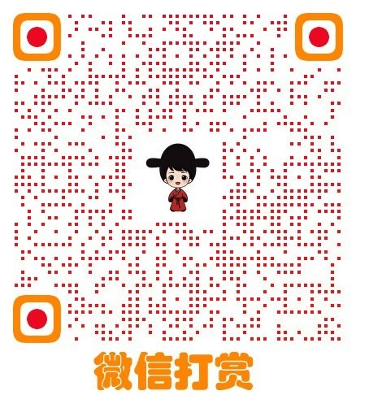

⚙
设置
×
本程序常驻系统托盘，不在任务栏显示；关闭窗口只会隐藏到托盘，托盘菜单可重新显示或退出。
界面语言
简体中文
English
时钟样式
翻页卡片
极简细体
霓虹
电子墨水
七段数码
打字机
毛玻璃
指针表盘
时钟字体
跟随样式（推荐）
系统无衬线
衬线体
等宽 / 数码感
圆润黑体
自定义…
自定义…
时钟颜色
跟随样式（推荐）
白色
青色
绿色
琥珀
粉色
红色
黑色
自定义…
自定义…
显示秒
12 小时制
总在最前
开机自启
背景板
无
模糊
暗色
浅色
大小
100%
拖动右下角也可调整
不透明度
闹钟
:
每天
添加
定时关机
分钟
启动
取消
未启用
到点将关闭计算机，请先保存工作；可随时取消。
权限与启动
正在检查权限…
始终以管理员身份启动
勾选后，下次手动启动以及开机自启都会自动向 Windows 请求管理员权限（UAC 提示由系统弹出）；取消勾选即恢复普通权限。
立即以管理员身份重启
退出程序
打赏支持
如果这个小工具有帮到你，欢迎请作者喝杯咖啡 ☕（完全自愿）
查看收款码
微信支付
支付宝

长按 / 截图后扫码 · 感谢你的支持
一键还原默认（Alt+R）
关闭
⏰ 闹钟
×
稍后提醒（5 分钟）
知道了